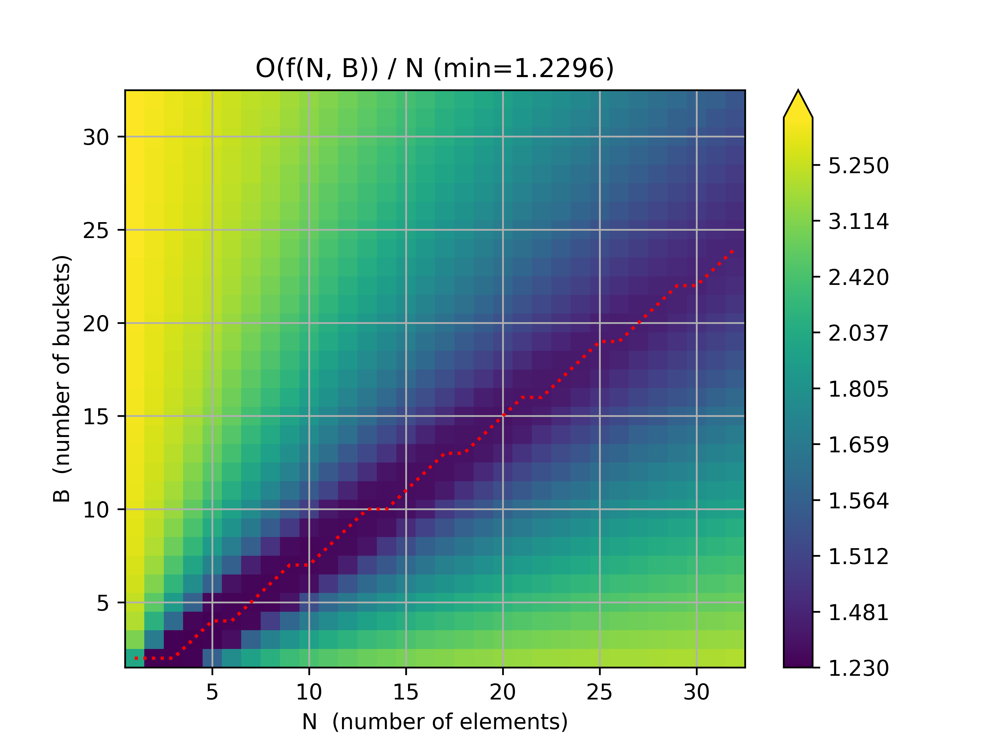
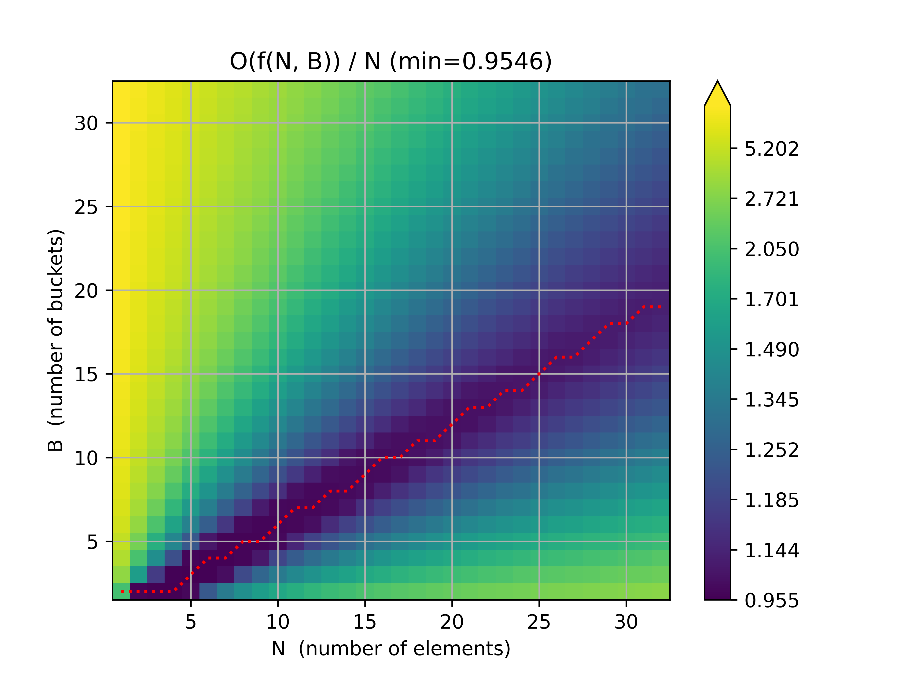

This post is about replacing the traditional Merge Sort merge step when joining/merging large datasets with a sort of "Merge Order" merge and attempt to calculate the big-O of Merge Order's runtime.
If you can calculate the big-O of Merge Order's runtime, I'd love to hear from you!:
$$ O \left(\sum_{k = 2}^N \frac{B (B - 1)^{N - k} {N \choose k} k \log_2k}{B^N} \right) $$
Recommended Background Knowledge
If you're reading this and aren't familiar with Merge Sort, Merge Join, or cache locality, I recommend reading up on those topics first:
- Merge Sort:
- How to implement it
- It's O(N * log(N)) runtime and O(1) space (in place)
- The merge step is O(N) runtime and O(1) space (in place)
- External Sorting:
- To sort a dataset that's too big to fit in memory, use External Sorting
- Merge Join:
- Why it's useful for joining sorted data that's too big to fit in memory
- How it's similiar to the join step in Merge Sort
- Cache Locality
- Why it's good for performance
- Shuffle Hash Joins don't have it
- No binary comparison-based sorting algorithm can do better than an O(N * log(N)) runtime
Merge Sort versus Merge Order
Why Merging is Useful
For so many applications of merging/joining data, you don't care if the data is sorted at the end of the merge join. For example, if you have two large tables about users and you want do join them by user id, you don't usually care that the output is sorted by user id. Often a user id should not tell you much about the user, in the same way that a bank account number should not tell you much about the owner of the bank account. You don't care but you still have to pay the O(N * log(N)) cost for sorting N elements!
Sometimes Better Than O(N * log(N))
Luckily, we can do better! The Merge Sort merge step has a couple requirements we should focus on: the two sequences being merged are already sorted and elements in the sequences can be compared. We know we can't sort in better than O(N * log(N)) time... but what if we could 'order' the elements faster!
Here's a relatively simple Merge Sort implementation for reference:
from typing import Any, Iterable, Iterator, List, Sequence
def merge(iter1: Iterable, iter2: Iterable) -> Iterator:
# Convert any iterables to iterators. (e.g. a list to an iterator)
iter1 = iter(iter1)
iter2 = iter(iter2)
# Get the first items in iter1 and iter2
x1 = next(iter1, None)
x2 = next(iter2, None)
# While there are items in iter1 and iter2:
while x1 is not None and x2 is not None:
# Yield the smaller value between iter1 and iter2, then get the next value.
if x1 < x2:
yield x1
x1 = next(iter1, None)
else:
yield x2
x2 = next(iter2, None)
# Yield any remaining values in iter1 and iter2
if x1 is not None:
yield x1
yield from iter1
if x2 is not None:
yield x2
yield from iter2
def merge_sorted(sequence: Sequence, low: int = 0, high: int = None) -> Sequence:
if high is None:
high = len(sequence)
if high - low <= 1:
return sequence[low:high]
middle = low + (high - low) // 2
left = merge_sorted(sequence, low, middle)
right = merge_sorted(sequence, middle, high)
return list(merge(left, right))
def demo_merge(input1, input2, expected_result):
actual_result = list(merge(input1, input2))
print(f"merge({input1!r}, {input2!r}) == {actual_result!r}")
assert actual_result == expected_result
def demo_merge_sorted(sequence):
expected_result = sorted(sequence)
actual_result = merge_sorted(sequence)
print(f"merge_sorted({sequence!r}) == {actual_result!r}")
assert actual_result == expected_result
def main():
demo_merge([], [], [])
demo_merge([], [0, 2, 5], [0, 2, 5])
demo_merge([1, 2, 3, 6], [], [1, 2, 3, 6])
demo_merge([1, 2, 3, 6], [0, 2, 5], [0, 1, 2, 2, 3, 5, 6])
demo_merge_sorted([])
demo_merge_sorted([8, 2, 1, 5, 0])
if __name__ == "__main__":
main()$ python3 merge_sort_demo.py
merge([], []) == [] merge([], [0, 2, 5]) == [0, 2, 5] merge([1, 2, 3, 6], []) == [1, 2, 3, 6] merge([1, 2, 3, 6], [0, 2, 5]) == [0, 1, 2, 2, 3, 5, 6] merge_sorted([]) == [] merge_sorted([8, 2, 1, 5, 0]) == [0, 1, 2, 5, 8]
Sorting Ints in O(N + M)
Let's take a look at an example of sorting without comparisons: Sorting N non-negative ints. Luckily for us, all ints are the same, so we only need to keep track of the number of times we've seen each int.
from typing import Any, Iterable, Iterator, List, Optional, Sequence
def sorted_non_negative_ints(ints: Iterable[int]) -> List[int]:
# counts[i] is the number of times we've seen the int i
counts: List[int] = []
for i in ints:
if i < 0:
raise ValueError(f"sorted_non_negative_ints got a negative int: {i}")
while i >= len(counts): # Grow counts until it's big enough!
counts.append(0)
counts[i] += 1
result = []
for i, count in enumerate(counts):
for _ in range(count):
result.append(i)
return result
def demo_sorted_ints(sequence):
expected_result = sorted(sequence)
actual_result = sorted_non_negative_ints(sequence)
print(f"sorted_non_negative_ints({sequence!r}) == {actual_result!r}")
assert actual_result == expected_result
def main():
demo_sorted_ints([])
demo_sorted_ints([8, 2, 1, 5, 1, 0])
demo_sorted_ints([0, 1, 2, 1, 2, 1, 1])
if __name__ == "__main__":
main()$ python3 int_sort_demo.py
sorted_non_negative_ints([]) == [] sorted_non_negative_ints([8, 2, 1, 5, 1, 0]) == [0, 1, 1, 2, 5, 8] sorted_non_negative_ints([0, 1, 2, 1, 2, 1, 1]) == [0, 1, 1, 1, 1, 2, 2]
This algorithm is sometimes better than O(N * log(N)) and sometimes much worse! It's clearly at least O(N) because we loop over N elements and must look at all N ints. It's O(len(ints) + max(ints)) or O(N + M), where M is the largest int.
When the number of buckets that we use for counting is O(N), this algorithm is also O(N)!
Ordering
We need to make sure that the same int always ends up in the same bucket and we need to limit the number of buckets. This is... literally the same use case as a hash map! The only problem is that some ints that are not equal to each other will end up in the same bucket. If our hash function is well distributed, then hash collisions should not happen too often and we can clean up collisions by sorting whatever's in each bucket.
from typing import Any, Iterable, Iterator, List, Sequence
def sorted_merge(iter1: Iterable, iter2: Iterable) -> Iterator:
# Convert any iterables to iterators. (e.g. a list to an iterator)
iter1 = iter(iter1)
iter2 = iter(iter2)
# Get the first items in iter1 and iter2
x1 = next(iter1, None)
x2 = next(iter2, None)
# While there are items in iter1 and iter2:
while x1 is not None and x2 is not None:
# Yield the smaller value between iter1 and iter2, then get the next value.
if x1 < x2:
yield x1
x1 = next(iter1, None)
else:
yield x2
x2 = next(iter2, None)
# Yield any remaining values in iter1 and iter2
if x1 is not None:
yield x1
yield from iter1
if x2 is not None:
yield x2
yield from iter2
def ordered_merge(iter1: Iterable, iter2: Iterable, num_buckets: int) -> Iterator:
for _, x in sorted_merge(
((hash(x) % num_buckets, x) for x in iter1),
((hash(x) % num_buckets, x) for x in iter2),
):
yield x
def ordered(sequence: Sequence, num_buckets: int) -> List:
buckets: List[List] = [[] for _ in range(num_buckets)]
for x in sequence:
buckets[hash(x) % num_buckets].append(x)
result = []
for bucket in buckets:
bucket.sort()
result.extend(sorted(bucket))
return result
def demo_sorted_ints(sequence, num_buckets):
expected_result = sorted(sequence, key=lambda x: (hash(x) % num_buckets, x))
actual_result = ordered(sequence, num_buckets)
print(f"ordered({sequence!r}, {num_buckets!r}) == {actual_result!r}")
assert actual_result == expected_result
def main():
demo_sorted_ints([], 4)
demo_sorted_ints([8, 2, 1, 5, 1, 0], 4)
demo_sorted_ints([0, 1, 2, 1, 2, 1, 1], 4)
if __name__ == "__main__":
main()$ python3 order_demo.py
ordered([], 4) == [] ordered([8, 2, 1, 5, 1, 0], 4) == [0, 8, 1, 1, 5, 2] ordered([0, 1, 2, 1, 2, 1, 1], 4) == [0, 1, 1, 1, 1, 2, 2]
Ordering Big-O
ordered uses O(N) space.
Calculating the big-O of the runtime is harder! In the worst-case, all the elements get hashed to the same bucket nad it's effectively O(N) time to hash and bucket the elements followed by an O(N * log(N)) sort! In the best-case, we choose num_buckets, B, to be an O(N) number like B = N or B = 3 * N and every unique element goes into a separate bucket, making our algorithm O(N)!
The average runtime must be between O(N) and O(N * log(N)). If there are K elements in a bucket, then sorting that bucket will take O(K * log(K)) time.
Runtime Example
Let's work through an example. If I have N = 3 elements, A, B, and C, that are placed into B = 2 buckets. There are a B^N = 2^3 = 8 ways the elements can be partitioned into buckets. If, we assume, every element is unique and each element has an equal chance of being in the any bucket, each of these partitions is equally likely. We can approximate the runtime of sorting K elements as 1 if K < 2 else K * log2(K).
| 1st Bucket | 2nd Bucket | Approximate Runtime |
|---|---|---|
| A, B, C | \( 3 \log_2(3) + 1 \) | |
| A, B | C | \( 2 \log_2(2) + 1 \) |
| A, C | B | \( 2 \log_2(2) + 1 \) |
| A | B, C | \( 1 + 2 \log_2(2) \) |
| B, C | A | \( 2 \log_2(2) + 1 \) |
| B | A, C | \( 1 + 2 \log_2(2) \) |
| C | A, B | \( 1 + 2 \log_2(2) \) |
| A, B, C | \( 1 + 3 \log_2(3) \) |
Now we approximate the average runtime by summing each partition's approximate runtime times the probabibility of that partition happening.
$$ \frac{1}{8} (3 \log_2(3) + 1) + \frac{1}{8} (2 \log_2(2) + 1) + \frac{1}{8} (2 \log_2(2) + 1) + \frac{1}{8} (1 + 2 \log_2(2)) + \frac{1}{8} (2 \log_2(2) + 1) + \frac{1}{8} (1 + 2 \log_2(2)) + \frac{1}{8} (1 + 2 \log_2(2)) + \frac{1}{8} (1 + 3 \log_2(3)) $$
$$ = \frac{1}{8} (2 \times 1 + 6 \times 1 + 6 \times 2 \log_2(2) + 2 \times 3 \log_2(3)) $$
$$ \approx 3.6887218755408675 $$
import collections
import functools
import itertools
import math
import operator
import time
from typing import Any, Iterable, Iterator, List, Sequence, Tuple
def approx_num_ops_to_sort(k: int) -> float:
return 1 if k < 2 else k * math.log2(k)
def approx_num_ops_to_order(partition: List) -> float:
return sum(approx_num_ops_to_sort(len(bucket)) for bucket in partition)
def _partitions(elements, buckets):
if not elements:
yield buckets
return
# For each bucket, place the first element in that bucket then yield all
# partitions of remaining elements.
for b in buckets:
b.append(elements[0])
yield from _partitions(elements[1:], buckets)
b.pop()
def partitions(elements, num_buckets):
return _partitions(elements, tuple([] for _ in range(num_buckets)))
def nice_partition_str(partition):
return f"[[{'], ['.join(''.join(bucket) for bucket in partition)}]]"
def main():
elements = ["A", "B", "C"]
num_elements = len(elements)
num_buckets = 2
num_partitions = num_buckets ** num_elements
for partition in partitions(elements, num_buckets):
approx_ops = approx_num_ops_to_order(partition)
print(
f"{nice_partition_str(partition)} takes approximately {approx_ops} operations order."
)
approx_avg_ops = (
sum(approx_num_ops_to_order(p) for p in partitions(elements, num_buckets))
/ num_partitions
)
print(
f"Ordering {num_elements} elements in {num_buckets} buckets takes {approx_avg_ops} operations on average."
)
if __name__ == "__main__":
main()$ python3 approx_ops_to_order.py
[[ABC], []] takes approximately 5.754887502163468 operations order. [[AB], [C]] takes approximately 3.0 operations order. [[AC], [B]] takes approximately 3.0 operations order. [[A], [BC]] takes approximately 3.0 operations order. [[BC], [A]] takes approximately 3.0 operations order. [[B], [AC]] takes approximately 3.0 operations order. [[C], [AB]] takes approximately 3.0 operations order. [[], [ABC]] takes approximately 5.754887502163468 operations order. Ordering 3 elements in 2 buckets takes 3.6887218755408675 operations on average.
Looking for Patterns
I don't know how to calculate the big-O of order and it's possible that I'm not able to calculate it. Even if I can't calculate the big-O, I'd still like to know how much better ordering is over sorting. Either way, I need to look for patterns!
Speeding Up!
approx_ops_to_order_simple.py works but... it's too slow to calculate approx_num_ops_to_order for large values, which makes it hard to look for patterns. When I replace the main with some code that outputs approx_num_ops_to_order for various N = 1..7 and B = 1..7, it takes about 2.5 seconds on my laptop. Going up to N = 8 and B = 8, takes about 54 seconds. Going up to N = 9 and B = 9, would probably take about 20 minutes. I don't know that it's take 20 minutes but I can make an educated guess based on the big-O for num_partitions. num_partitions = num_buckets ** num_elements so simply computing all partitions(8, 8) should take about 8 ** 8 / 7 ** 7 ~= 20.37 times as long, which is pretty close to the 54 seconds / 2.5 seconds = 21.6 ratio that we saw in code. I'd really like to calculate the average number of operations for millions or at least thousands of elements and buckets but the current code would probably take about 54 * (15**15 / 8**8) / (60 * 60 * 24 * 365) ~= 44692.65 years just to calculate up to N = B = 15.
for num_elements in range(1, 8):
elements = list(range(num_elements))
for num_buckets in range(1, 8):
num_partitions = num_buckets ** num_elements
approx_avg_ops = sum(approx_num_ops_to_order(p) for p in partitions(elements, num_buckets)) / num_partitions
print(num_elements, num_buckets, num_partitions, approx_avg_ops)
Collapsing Identical Partitions
For our calculations, we don't actually need to enumerate every possible partition. We just need to know how many buckets have K elements in them so we can sum approx_num_ops_to_sort(K). To do that we'll only generate the descending partitions, where each bucket has the same or fewer elements as the previous bucket.
For example, with N = 3 elements and B = 2 bins, the [ABC] [] and [] [ABC] partitions would be represented as [3, 0] and [0, 3] but we will only generate the [3, 0] partition and calculate how many partitions have buckets with 3 and 0 elements in them.
import collections
import functools
import itertools
import math
import operator
import time
from typing import Any, Dict, Iterable, Iterator, List, Sequence, Tuple
def approx_num_ops_to_sort(k: int) -> float:
return 1 if k < 2 else k * math.log2(k)
def approx_num_ops_to_order(partition: List[int]) -> float:
return sum(approx_num_ops_to_sort(k) for k in partition)
def fact(n):
return functools.reduce(operator.mul, range(2, n + 1), 1)
def choose(n, k):
return fact(n) // fact(n - k) // fact(k)
def _descending_partitions(
num_elements: int,
num_buckets: int,
max_in_cur_bucket: int,
partition_so_far: List[int],
num_partitions: int,
) -> Iterator[Tuple[List[int], int]]:
"""Yields all partitions in descending order with num_elements in num_buckets such that every bucket has
max_in_cur_bucket or fewer elements.
"""
if num_buckets == 0:
assert num_elements == 0
# print(f'{num_elements=} {num_buckets=} {max_in_cur_bucket=} {partition_so_far=} {num_partitions=}')
yield partition_so_far, num_partitions
return
# min_in_cur_bucket is the fewest number of elements we can have in our current bucket such that it is still
# possible to put num_elements elements in num_buckets.
min_in_cur_bucket = (num_elements + num_buckets - 1) // num_buckets
for num_in_cur_bucket in range(min_in_cur_bucket, max_in_cur_bucket + 1):
num_elements_remaining = num_elements - num_in_cur_bucket
partition_so_far.append(num_in_cur_bucket)
yield from _descending_partitions(
num_elements_remaining,
num_buckets - 1,
min(num_elements_remaining, num_in_cur_bucket),
partition_so_far,
# We multiply the number of possible partitions we've seen so far by the number of ways we can choose
# num_in_cur_bucket elements from num_elements.
num_partitions * choose(num_elements, num_in_cur_bucket),
)
partition_so_far.pop()
def partitions(num_elements: int, num_buckets: int) -> Iterator[Tuple[List[int], int]]:
for partition, num_duplicates in _descending_partitions(
num_elements, num_buckets, num_elements, [], 1
):
# Since we are are only looking at descending partitions, we need to account for all the different ways that a
# descending partition can be reordered. For example, [3, 1] can also be [1, 3] and [2, 2] is already unique.
# In general there are N! ways to order N elements, so we multiply by num_buckets! and divide by
# partition.count(num_in_bucket)! to account for buckets with the same number of elements.
num_duplicates *= fact(num_buckets)
# bucket_counts[k] is the number of buckets that have k elements in them
bucket_counts: Dict[int, int] = collections.defaultdict(int)
for num_in_bucket in partition:
bucket_counts[num_in_bucket] += 1
for num_buckets_with_x_elements in bucket_counts.values():
num_duplicates //= fact(num_buckets_with_x_elements)
yield partition, num_duplicates
def main():
num_elements = 3
num_buckets = 2
num_partitions = num_buckets ** num_elements
for partition, num_duplicates in partitions(num_elements, num_buckets):
approx_ops = approx_num_ops_to_order(partition)
print(
f"{partition} occurs {num_duplicates} times and takes approximately {approx_ops} operations to order."
)
approx_avg_ops = (
sum(
d * approx_num_ops_to_order(p)
for p, d in partitions(num_elements, num_buckets)
)
/ num_partitions
)
print(
f"Ordering {num_elements} elements in {num_buckets} buckets takes {approx_avg_ops} operations on average."
)
if __name__ == "__main__":
main()$ python3 approx_ops_to_order_v2.py
[2, 1] occurs 6 times and takes approximately 3.0 operations to order. [3, 0] occurs 2 times and takes approximately 5.754887502163468 operations to order. Ordering 3 elements in 2 buckets takes 3.688721875540867 operations on average.
Swapping out main() for the code below, we can calculate approx_num_ops_to_order for N = 1..30, B = 1..30 in about 21.3 seconds or up to N = B = 32 in about 37.3 seconds!
for num_elements in range(1, 33):
for num_buckets in range(1, 33):
num_partitions = num_buckets ** num_elements
approx_avg_ops = sum(d * approx_num_ops_to_order(p) for p, d in partitions(num_elements, num_buckets)) / num_partitions
print(num_elements, num_buckets, num_partitions, approx_avg_ops)
The number of unique/descending partitions should be much smaller since there are about B! partitions for every descending partition. Let's see if that looks small enough.
for num_elements in [1, 10, 20, 30, 40, 50]:
num_buckets = num_elements
num_partitions = num_buckets ** num_elements
num_desc_partitions = sum(1 for _ in partitions(num_elements, num_buckets))
print(num_elements, num_buckets, num_partitions / num_desc_partitions, num_desc_partitions)
$ time python3 approx_ops_to_order_v2.py
1 1 1.0 1
10 10 238095238.0952381 42
20 20 1.6723700159489634e+23 627
30 30 3.6740030709252144e+40 5604
40 40 3.2377894360025423e+59 37338
50 50 4.348997775504222e+79 204226
real 0m18.927s
user 0m18.839s
sys 0m0.056s
Profiling and Caching
Finding the roughly 250,000 partitions and calculating approx_avg_ops shouldn't take 19 seconds... Let's investigate! First we'll profile the code and look for what's the slowest part.
def main():
for num_elements in [1, 10, 20, 30, 40, 50]:
num_buckets = num_elements
num_partitions = num_buckets ** num_elements
num_desc_partitions = sum(1 for _ in partitions(num_elements, num_buckets))
print(num_elements, num_buckets, num_partitions / num_desc_partitions, num_desc_partitions)
if __name__ == "__main__":
cProfile.run('main()')
127806065 function calls (105797656 primitive calls) in 39.991 seconds
ncalls tottime percall cumtime percall filename:lineno(function)
1 0.000 0.000 39.991 39.991 <string>:1(<module>)
32158119 9.667 0.000 14.974 0.000 approx_ops_to_order_v3.py:20(fact)
10122508 4.857 0.000 18.140 0.000 approx_ops_to_order_v3.py:24(choose)
22256253/247844 15.020 0.000 36.109 0.000 approx_ops_to_order_v3.py:28(_descending_partitions)
247844 2.041 0.000 39.870 0.000 approx_ops_to_order_v3.py:61(partitions)
1 0.000 0.000 39.991 39.991 approx_ops_to_order_v3.py:77(main)
247844 0.080 0.000 39.950 0.000 approx_ops_to_order_v3.py:81(<genexpr>)
32158119 5.307 0.000 5.307 0.000 {built-in method _functools.reduce}
1 0.000 0.000 39.991 39.991 {built-in method builtins.exec}
10122508 1.494 0.000 1.494 0.000 {built-in method builtins.min}
6 0.000 0.000 0.000 0.000 {built-in method builtins.print}
6 0.041 0.007 39.991 6.665 {built-in method builtins.sum}
10122508 0.793 0.000 0.793 0.000 {method 'append' of 'list' objects}
1 0.000 0.000 0.000 0.000 {method 'disable' of '_lsprof.Profiler' objects}
10122508 0.662 0.000 0.662 0.000 {method 'pop' of 'list' objects}
247838 0.029 0.000 0.029 0.000 {method 'values' of 'dict' objects}
About half of the time is spent in fact and choose and most of the other half is in _descending_partitions. Since we only call fact and choose with small values, we can spend a small amount of memory to memoise these functions. However, it's also possible that the real reason the code is slow is that operating on large ints is slow.
Let's try caching/memoising fact first:
__fact_cache = [] # __fact_cache[n] == fact(n)
def fact(n):
while n >= len(__fact_cache):
__fact_cache.append(functools.reduce(operator.mul, range(2, len(__fact_cache) + 1), 1))
return __fact_cache[n]
127806269 function calls (105797860 primitive calls) in 32.439 seconds
ncalls tottime percall cumtime percall filename:lineno(function)
...
32158119 6.008 0.000 7.860 0.000 approx_ops_to_order_v3.py:21(fact)
10122508 4.826 0.000 12.209 0.000 approx_ops_to_order_v3.py:27(choose)
...
fact is now about twice as fast with a cache that uses O(n) memory!
Let's just try indexing right away since it's very rare that n >= len(__fact_cache):
__fact_cache = [] # __fact_cache[n] == fact(n)
def fact(n):
try:
return __fact_cache[n]
except IndexError:
pass
while n >= len(__fact_cache):
__fact_cache.append(functools.reduce(operator.mul, range(2, len(__fact_cache) + 1), 1))
return __fact_cache[n]
95648156 function calls (73639747 primitive calls) in 27.244 seconds
ncalls tottime percall cumtime percall filename:lineno(function)
...
32158119 2.922 0.000 2.922 0.000 approx_ops_to_order_v3.py:21(fact)
10122508 4.726 0.000 7.470 0.000 approx_ops_to_order_v3.py:31(choose)
...
fact is now about twice as fast again!
Let's try
__choose_cache = [] # __choose_cache[n][k] == choose(n, k)
def choose(n, k):
try:
return __choose_cache[n][k]
except IndexError:
pass
while n >= len(__choose_cache):
__choose_cache.append([])
__choose_cache_n = __choose_cache[n]
while k >= len(__choose_cache_n):
sub_k = len(__choose_cache_n)
__choose_cache_n.append(fact(n) // fact(n - sub_k) // fact(sub_k))
return __choose_cache[n][k]
65286762 function calls (43278353 primitive calls) in 20.840 seconds
ncalls tottime percall cumtime percall filename:lineno(function)
...
1792893 0.204 0.000 0.204 0.000 approx_ops_to_order_v3.py:21(fact)
10122508 1.201 0.000 1.202 0.000 approx_ops_to_order_v3.py:32(choose)
...
choose is now about 6 times faster, even after caching fact, but the cache size is O(n^2).
Replacing Large Ints with Small Floats
Caching made the code take about half as much time overall but it's still slow. Part of that might be because we're adding, multiplying, and dividing large ints. Luckily, we don't need the precision that comes with ints, so we can try using logarithms instead. This also has the nice benefit that we can use math.lgamma to replace the reduce(mul, ...) in fact.
Here's a snippet of how the code changes:
# fact, partitions, and other functions were also updated, but I've left out most of the code because it's not that different.
__log_choose_cache = [] # __log_choose_cache[n][k] == log_choose(n, k)
def log_choose(n, k):
try:
return __log_choose_cache[n][k]
except IndexError:
pass
while n >= len(__log_choose_cache):
__log_choose_cache.append([])
__log_choose_cache_n = __log_choose_cache[n]
while k >= len(__log_choose_cache_n):
sub_k = len(__log_choose_cache_n)
__log_choose_cache_n.append(log_fact(n) - log_fact(n - sub_k) - log_fact(sub_k))
return __log_choose_cache[n][k]
def main():
for num_elements in [1, 10, 20, 30, 40, 50]:
num_buckets = num_elements
log_num_partitions = num_elements * math.log(num_buckets)
num_desc_partitions = sum(1 for _ in partitions(num_elements, num_buckets)))
partitions_per_desc_partition = math.exp(log_num_partitions - math.log(num_desc_partitions))
print(num_elements, num_buckets, partitions_per_desc_partition, num_desc_partitions)
65286762 function calls (43278353 primitive calls) in 20.645 seconds
ncalls tottime percall cumtime percall filename:lineno(function)
1 0.000 0.000 20.645 20.645 <string>:1(<module>)
1792893 0.200 0.000 0.200 0.000 approx_ops_to_order_v3.py:21(fact)
10122508 1.176 0.000 1.177 0.000 approx_ops_to_order_v3.py:32(choose)
22256253/247844 14.331 0.000 18.330 0.000 approx_ops_to_order_v3.py:46(_descending_partitions)
247844 1.976 0.000 20.534 0.000 approx_ops_to_order_v3.py:79(partitions)
1 0.000 0.000 20.645 20.645 approx_ops_to_order_v3.py:95(main)
247844 0.074 0.000 20.607 0.000 approx_ops_to_order_v3.py:99(<genexpr>)
51 0.000 0.000 0.000 0.000 {built-in method _functools.reduce}
1 0.000 0.000 20.645 20.645 {built-in method builtins.exec}
3123 0.000 0.000 0.000 0.000 {built-in method builtins.len}
10122508 1.386 0.000 1.386 0.000 {built-in method builtins.min}
6 0.000 0.000 0.000 0.000 {built-in method builtins.print}
6 0.038 0.006 20.645 3.441 {built-in method builtins.sum}
10123376 0.767 0.000 0.767 0.000 {method 'append' of 'list' objects}
1 0.000 0.000 0.000 0.000 {method 'disable' of '_lsprof.Profiler' objects}
10122508 0.670 0.000 0.670 0.000 {method 'pop' of 'list' objects}
247838 0.028 0.000 0.028 0.000 {method 'values' of 'dict' objects}
Replacing all of the large ints with their log float versions had no noticable effect on the code! The code is just slightly more complicated. It's possible that this will still speed up the code for much larger numbers like num_elements = num_buckets = 100000 but we can't easily test that now.
Compact Partition Format
At this point, the bulk of the time is being spent just generating partitions. We may be able to speed that up by going to a more compact format: instead of a partition being represented as a list of how many elements are in each bucket, we can represent it as a list of (number of elements in a bucket, number of buckets with that many elements). For example, the partition [4, 3, 3] represents 3 buckets where 1 bucket has 4 elements and 2 buckets have 3 elements. In our new representation, that would be [(4, 1), (3, 2)].
import cProfile
import collections
import functools
import itertools
import math
import operator
import time
from typing import Any, Iterable, Iterator, List, Sequence, Tuple
def approx_num_ops_to_sort(k: int) -> float:
return 1 if k < 2 else k * math.log2(k)
def approx_num_ops_to_order(partition: List[Tuple[int, int]]) -> float:
return sum(d * approx_num_ops_to_sort(k) for k, d in partition)
__log_fact_cache: List[float] = [] # __log_fact_cache[n] == log_fact(n)
def log_fact(n):
try:
return __log_fact_cache[n]
except IndexError:
pass
while n >= len(__log_fact_cache):
__log_fact_cache.append(math.lgamma(n + 1))
return __log_fact_cache[n]
__log_choose_cache: List[
List[float]
] = [] # __log_choose_cache[n][k] == log_choose(n, k)
def log_choose(n, k):
try:
return __log_choose_cache[n][k]
except IndexError:
pass
while n >= len(__log_choose_cache):
__log_choose_cache.append([])
__log_choose_cache_n = __log_choose_cache[n]
while k >= len(__log_choose_cache_n):
sub_k = len(__log_choose_cache_n)
__log_choose_cache_n.append(log_fact(n) - log_fact(n - sub_k) - log_fact(sub_k))
return __log_choose_cache[n][k]
def _descending_partitions(
num_elements: int,
num_buckets: int,
max_in_cur_bucket: int,
partition_so_far: List[Tuple[int, int]],
log_num_partitions: float,
) -> Iterator[Tuple[List[Tuple[int, int]], float]]:
"""Yields all partitions in descending order with num_elements in num_buckets such that every bucket has
max_in_cur_bucket or fewer elements.
"""
if num_buckets == 0:
assert num_elements == 0
yield partition_so_far, log_num_partitions
return
if max_in_cur_bucket == 0:
partition_so_far.append((0, num_buckets))
yield partition_so_far, log_num_partitions
partition_so_far.pop()
return
# min_in_cur_bucket is the fewest number of elements we can have in our current bucket such that it is still
# possible to put num_elements elements in num_buckets.
min_in_cur_bucket = (num_elements + num_buckets - 1) // num_buckets
for num_in_cur_bucket in range(min_in_cur_bucket, max_in_cur_bucket + 1):
min_repetitions = max(
num_elements + num_buckets - num_in_cur_bucket * num_buckets, 1
)
max_repetitions = num_elements // num_in_cur_bucket
for repitions in range(min_repetitions, max_repetitions + 1):
num_elements_remaining = num_elements - repitions * num_in_cur_bucket
partition_so_far.append((num_in_cur_bucket, repitions))
yield from _descending_partitions(
num_elements_remaining,
num_buckets - repitions,
min(num_elements_remaining, num_in_cur_bucket - 1),
partition_so_far,
# We multiply the number of possible partitions we've seen so far by the number of ways we can log_choose
# num_in_cur_bucket elements from num_elements.
log_num_partitions
+ sum(
log_choose(num_elements - x * num_in_cur_bucket, num_in_cur_bucket)
for x in range(repitions)
),
)
partition_so_far.pop()
def partitions(
num_elements: int, num_buckets: int
) -> Iterator[Tuple[List[Tuple[int, int]], float]]:
for partition, log_num_duplicates in _descending_partitions(
num_elements, num_buckets, num_elements, [], 0.0
):
log_num_duplicates += log_fact(num_buckets)
for num_in_bucket, num_buckets_with_x_elements in partition:
log_num_duplicates -= log_fact(num_buckets_with_x_elements)
yield partition, log_num_duplicates
def main():
for num_elements in [1, 10, 20, 30, 40, 50]:
num_buckets = num_elements
log_num_partitions = num_elements * math.log(num_buckets)
num_desc_partitions = sum(1 for _ in partitions(num_elements, num_buckets))
partitions_per_desc_partition = math.exp(
log_num_partitions - math.log(num_desc_partitions)
)
print(
num_elements,
num_buckets,
partitions_per_desc_partition,
num_desc_partitions,
)
if __name__ == "__main__":
cProfile.run("main()") 11457145 function calls (9246964 primitive calls) in 3.395 seconds
ncalls tottime percall cumtime percall filename:lineno(function)
1 0.000 0.000 3.395 3.395 <string>:1(<module>)
247844 0.066 0.000 3.356 0.000 approx_ops_to_order_v4.py:102(<genexpr>)
1792890 0.172 0.000 0.172 0.000 approx_ops_to_order_v4.py:21(log_fact)
2044067 0.248 0.000 0.249 0.000 approx_ops_to_order_v4.py:32(log_choose)
2000397/247844 1.346 0.000 2.722 0.000 approx_ops_to_order_v4.py:46(_descending_partitions)
2501695 0.587 0.000 0.836 0.000 approx_ops_to_order_v4.py:82(<genexpr>)
247844 0.396 0.000 3.290 0.000 approx_ops_to_order_v4.py:90(partitions)
1 0.000 0.000 3.395 3.395 approx_ops_to_order_v4.py:98(main)
1 0.000 0.000 3.395 3.395 {built-in method builtins.exec}
3068 0.000 0.000 0.000 0.000 {built-in method builtins.len}
292212 0.051 0.000 0.051 0.000 {built-in method builtins.max}
457628 0.076 0.000 0.076 0.000 {built-in method builtins.min}
6 0.000 0.000 0.000 0.000 {built-in method builtins.print}
457634/6 0.342 0.000 3.394 0.566 {built-in method builtins.sum}
6 0.000 0.000 0.000 0.000 {built-in method math.exp}
51 0.000 0.000 0.000 0.000 {built-in method math.lgamma}
12 0.000 0.000 0.000 0.000 {built-in method math.log}
706327 0.053 0.000 0.053 0.000 {method 'append' of 'list' objects}
1 0.000 0.000 0.000 0.000 {method 'disable' of '_lsprof.Profiler' objects}
705460 0.057 0.000 0.057 0.000 {method 'pop' of 'list' objects}
Woh! Now _descending_partitionsis more complicated but it's also 5 to 6 times faster!
Visualizing Data
Let's visualize the data so we can look for patterns more easily. The easiest way I know to do that is to output some data and use matplotlib.
def approx_num_ops_to_sort(k: int, base: float = 2) -> float:
return 1 if k < 2 else k * math.log(k, base)
def approx_num_ops_to_order(partition: List[Tuple[int, int]], base: float = 2) -> float:
return sum(d * approx_num_ops_to_sort(k, base) for k, d in partition)
# ...
def main():
max_n = 32
with open('output_v5.csv', 'w') as f:
f.write("num_elements,num_buckets,approx_ops_base_2,approx_ops_base_e\n")
for num_elements in range(1, max_n + 1):
print(num_elements, 'of', max_n)
for num_buckets in range(1, max_n + 1):
log_num_partitions = num_elements * math.log(num_buckets)
approx_ops_base_2 = sum(
approx_num_ops_to_order(p, 2) * math.exp(lnd - log_num_partitions)
for p, lnd in partitions(num_elements, num_buckets)
)
approx_ops_base_e = sum(
approx_num_ops_to_order(p, math.e) * math.exp(lnd - log_num_partitions)
for p, lnd in partitions(num_elements, num_buckets)
)
f.write(f"{num_elements},{num_buckets},{approx_ops_base_2},{approx_ops_base_e}\n")
num_elements,num_buckets,approx_ops_base_2,approx_ops_base_e
1,1,1.0,1.0
1,2,1.9999999999999993,1.9999999999999993
1,3,3.0000000000000018,3.0000000000000018
1,4,3.9999999999999956,3.9999999999999956
...
32,28,48.025701121918495,39.1524187172222
32,29,48.316123241557435,39.69376485763119
32,30,48.65250855437975,40.26728435336434
32,31,49.030694003599734,40.86992058368597
32,32,49.44699040628589,41.49897539322032
The output looks right. Let's plot it:
import collections
import csv
import math
import numpy as np
import matplotlib.pyplot as plt
import matplotlib.cm as cm
import matplotlib.colors as colors
def load_approx_ops_csv(csv_filename):
approx_ops_base_2 = collections.defaultdict(dict)
approx_ops_base_e = collections.defaultdict(dict)
with open(csv_filename, "r") as f:
for row in csv.DictReader(f):
num_elements = int(row["num_elements"])
num_buckets = int(row["num_buckets"])
if num_buckets < 2:
continue
approx_ops_base_2[num_elements][num_buckets] = (
float(row["approx_ops_base_2"]) / num_elements
)
approx_ops_base_e[num_elements][num_buckets] = (
float(row["approx_ops_base_e"]) / num_elements
)
return approx_ops_base_2, approx_ops_base_e
def plot(approx_ops, out_filename, sub_title=""):
num_elementss = sorted(num_elements for num_elements in approx_ops)
num_bucketss = sorted(
set(num_buckets for sub_dict in approx_ops.values() for num_buckets in sub_dict)
)
width = len(num_elementss)
height = len(num_bucketss)
z = np.zeros((height, width))
for x, num_elements in enumerate(num_elementss):
for y, num_buckets in enumerate(num_bucketss):
z[y, x] = approx_ops[num_elements][num_buckets]
x = num_elementss
y = num_bucketss
fig, ax = plt.subplots()
# ax.set_title(f"approx_ops / num_elements ({sub_title}) (min={z.min():.4f})")
# ax.set_xlabel("num_elements")
# ax.set_ylabel("num_buckets")
ax.set_title(f"O(f(N, B)) / N (min={z.min():.4f})")
ax.set_xlabel("N (number of elements)")
ax.set_ylabel("B (number of buckets)")
sorted_z = sorted(z.flat)
boundaries = [sorted_z[(len(sorted_z) - 1) * i // 256] for i in range(256 + 1)]
norm = colors.BoundaryNorm(
boundaries=boundaries, clip=True, ncolors=len(boundaries)
)
pcm = ax.pcolormesh(x, y, z, norm=norm)
fig.colorbar(pcm, ax=ax, extend="max", orientation="vertical")
y = np.array([min(approx_ops[no], key=lambda nb: approx_ops[no][nb]) for no in x])
print("Optimal num_buckets / num_elements ratio:", y / x)
plt.plot(x, y, "r:")
plt.grid()
plt.savefig(out_filename, dpi=600)
approx_ops_base_2, approx_ops_base_e = load_approx_ops_csv("output_v5.csv")
plot(approx_ops_base_2, "approx_ops_base_2_v5.png", "Base 2")
plot(approx_ops_base_e, "approx_ops_base_e_v5.png", "Base e")
approx_ops_base_2, approx_ops_base_e = load_approx_ops_csv("output_v7.csv")
plot(approx_ops_base_2, "approx_ops_base_2_v7.png", "Base 2")
plot(approx_ops_base_e, "approx_ops_base_e_v7.png", "Base e") 
The red line represents the minimum approx_ops / num_elements. As far as I can tell, it looks like a straight line, which would suggest that order is O(N)! Unfortunately, the code is still too slow to give us a detailed plot with large num_elements...
Speeding Up and Gaining Insight
So far, we've tried to calculate all the (unique) partitions and calculate the average appoximate operations to sort based on that but if we could somehow calculate the number of times a bucket has K elements in it across any partition, that'd be even faster!
In general, if there are N elements and B buckets, then the chance that a specific bucket has a specific element in it is \( 1/B \). So, the average number of buckets with 1 element in them per partition should be... uhhh... I don't know.
I don't know, so I'm going to see if there's a pattern in a relatively simple case, like when num_buckets == num_elements.
def main():
max_n = 9
for num_elements in range(1, max_n + 1):
num_buckets = num_elements
bucket_counts: Dict[int, int] = collections.defaultdict(int)
bucket_counts[0] = 0
for partition, log_num_duplicates in partitions(num_elements, num_buckets):
num_duplicates = int(round(math.exp(log_num_duplicates)))
for k, num_buckets_with_k_elements in partition:
bucket_counts[k] += num_buckets_with_k_elements * num_duplicates
for k, num_buckets_with_k_elements in sorted(bucket_counts.items()):
print(f"{k}: {num_buckets_with_k_elements:<10d} ", end="")
print()
0: 0 1: 1
0: 2 1: 4 2: 2
0: 24 1: 36 2: 18 3: 3
0: 324 1: 432 2: 216 3: 48 4: 4
0: 5120 1: 6400 2: 3200 3: 800 4: 100 5: 5
0: 93750 1: 112500 2: 56250 3: 15000 4: 2250 5: 180 6: 6
0: 1959552 1: 2286144 2: 1143072 3: 317520 4: 52920 5: 5292 6: 294 7: 7
0: 46118408 1: 52706752 2: 26353376 3: 7529536 4: 1344560 5: 153664 6: 10976 7: 448 8: 8
0: 1207959552 1: 1358954496 2: 679477248 3: 198180864 4: 37158912 5: 4644864 6: 387072 7: 20736 8: 648 9: 9
I tried searching for some sequences, like the 1, 4, 36, 432, 6400 but found nothing. However, each row seems to be divisible by the corresponding num_buckets. If we divide each row, we get the following:
0: 0 1: 1
0: 1 1: 2 2: 1
0: 8 1: 12 2: 6 3: 1
0: 81 1: 108 2: 54 3: 12 4: 1
0: 1024 1: 1280 2: 640 3: 160 4: 20 5: 1
0: 15625 1: 18750 2: 9375 3: 2500 4: 375 5: 30 6: 1
0: 279936 1: 326592 2: 163296 3: 45360 4: 7560 5: 756 6: 42 7: 1
0: 5764801 1: 6588344 2: 3294172 3: 941192 4: 168070 5: 19208 6: 1372 7: 56 8: 1
0: 134217728 1: 150994944 2: 75497472 3: 22020096 4: 4128768 5: 516096 6: 43008 7: 2304 8: 72 9: 1
Interestingly, the sequence for number of buckets with 1 elements, [1, 2, 12, 108, ...], is the same as oeis.org/A055897 or n * (n - 1) ** (n - 1).
>>> [n * (n - 1) ** (n - 1) for n in range(1, 10)]
[1, 2, 12, 108, 1280, 18750, 326592, 6588344, 150994944]
>>> [n * n * (n - 1) ** (n - 1) for n in range(1, 10)]
[1, 4, 36, 432, 6400, 112500, 2286144, 52706752, 1358954496]
>>>
Similarly, the sequence for the number of buckets with 2 elements, [], is the same as oeis.org/A081132 shifted by one or (n - 1) ** (n - 2) * choose(n, 2).
>>> [(n - 1) ** (n - 2) * choose(n, 2) for n in range(2, 10)]
[1, 6, 54, 640, 9375, 163296, 3294172, 75497472]
>>> [n * (n - 1) ** (n - 2) * choose(n, 2) for n in range(2, 10)]
[2, 18, 216, 3200, 56250, 1143072, 26353376, 679477248]
>>>
Those two sequences look quite similar. With a little rearranging, they are both of the form (n - 1) ** (n - k) * choose(n, k) where k is the number of elements in a bucket! Let's try it out and see if it works.
def num_buckets_with_k_elements(n, k):
return n * (n - 1) ** (n - k) * choose(n, k)
def main():
max_n = 9
for n in range(1, max_n + 1):
for k in range(n + 1):
print(f"{k}: {num_buckets_with_k_elements(n, k) // n:<10d} ", end="")
print()
0: 0 1: 1
0: 1 1: 2 2: 1
0: 8 1: 12 2: 6 3: 1
0: 81 1: 108 2: 54 3: 12 4: 1
0: 1024 1: 1280 2: 640 3: 160 4: 20 5: 1
0: 15625 1: 18750 2: 9375 3: 2500 4: 375 5: 30 6: 1
0: 279936 1: 326592 2: 163296 3: 45360 4: 7560 5: 756 6: 42 7: 1
0: 5764801 1: 6588344 2: 3294172 3: 941192 4: 168070 5: 19208 6: 1372 7: 56 8: 1
0: 134217728 1: 150994944 2: 75497472 3: 22020096 4: 4128768 5: 516096 6: 43008 7: 2304 8: 72 9: 1
Woh... it does. The only issue now is that this formula only works when num_elements == num_buckets. If we try replacing n in num_buckets_with_k_elements with num_elements or num_buckets, we might get lucky and find a formula that matches our slower computation!
def bucket_counts_slow(num_elements: int, num_buckets: int) -> List[Tuple[int, int]]:
bucket_counts: Dict[int, int] = collections.defaultdict(int)
for partition, num_duplicates in partitions(num_elements, num_buckets):
for k, num_buckets_with_k_elements in partition:
bucket_counts[k] += num_buckets_with_k_elements * num_duplicates
return sorted(bucket_counts.items())
def bucket_counts_fast(n) -> List[Tuple[int, int]]:
bucket_counts = []
for k in range(n + 1):
nbwke = num_buckets_with_k_elements(n, k)
if nbwke > 0:
bucket_counts.append((k, nbwke))
return bucket_counts
def main():
max_n = 30
for n in range(1, max_n + 1):
bc_slow = bucket_counts_slow(n, n)
bc_fast = bucket_counts_fast(n)
if bc_slow != bc_fast:
print(n)
print(bc_slow)
print(" !=")
print(bc_fast)
print()
return
14
[(0, 55123269399790485), (1, 59363520892082098), (2, 29681760446041045), (3, 9132849368012628), (4, 1931948904771898), (5, 297222908426444), (6, 34294950972282), (7, 3014940744816), (8, 202928703978), (9, 10406600204), (10, 400253854), (11, 11195912), (12, 215306), (13, 2548), (14, 14)]
!=
[(0, 55123269399790046), (1, 59363520892081588), (2, 29681760446040794), (3, 9132849368012552), (4, 1931948904771886), (5, 297222908426444), (6, 34294950972282), (7, 3014940744816), (8, 202928703978), (9, 10406600204), (10, 400253854), (11, 11195912), (12, 215306), (13, 2548), (14, 14)]
Oh no! Some of the larger numbers don't match. This might be because of the precision that we lose when using logs instead of ints.
It was the precision issue. Changing the code back to using large ints allows that same main() to complete without output.
Now, we can try to substitute num_elements and num_buckets for n in num_buckets_with_k_elements to hopefully get a more general formula.
def num_buckets_with_k_elements(ns, k):
try:
return ns[0] * (ns[1] - 1) ** (ns[2] - k) * choose(ns[3], k)
except:
return 0
def bucket_counts_fast(ns, num_elements) -> List[Tuple[int, int]]:
bucket_counts = []
for k in range(num_elements + 1):
nbwke = num_buckets_with_k_elements(ns, k)
if nbwke > 0:
bucket_counts.append((k, nbwke))
return bucket_counts
def main():
max_n = 10
total_trials = 0
success_counts = collections.defaultdict(int)
for num_elements in range(1, max_n + 1):
for num_buckets in range(1, max_n + 1):
if num_buckets == num_elements:
continue
total_trials += 1
bc_slow = bucket_counts_slow(num_elements, num_buckets)
for ns_strs, ns in zip(
itertools.product(("num_elements", "num_buckets"), repeat=4),
itertools.product((num_elements, num_buckets), repeat=4),
):
bc_fast = bucket_counts_fast(ns, num_elements)
if bc_slow == bc_fast:
success_counts[ns_strs] += 1
print('Success Rates:')
for ns_strs, success_count in success_counts.items():
print(success_count / total_trials, ", ".join(ns_strs))
Success Rates:
1.0 num_buckets, num_buckets, num_elements, num_elements
0.1 num_buckets, num_buckets, num_buckets, num_elements
It looks like we have a winning combination!
def num_buckets_with_k_elements(num_elements, num_buckets, k):
return num_buckets * (num_buckets - 1) ** (num_elements - k) * choose(num_elements, k)
def bucket_counts_fast(num_elements, num_buckets) -> List[Tuple[int, int]]:
bucket_counts = []
for k in range(num_elements + 1):
nbwke = num_buckets_with_k_elements(num_elements, num_buckets, k)
if nbwke > 0:
bucket_counts.append((k, nbwke))
return bucket_counts
def main():
max_n = 20
for num_elements in range(1, max_n + 1):
for num_buckets in range(1, max_n + 1):
if num_buckets == num_elements:
continue
bc_slow = bucket_counts_slow(num_elements, num_buckets)
bc_fast = bucket_counts_fast(num_elements, num_buckets)
if bc_slow != bc_fast:
print(num_elements, num_buckets)
print(bc_slow)
print(" !=")
print(bc_fast)
print()
return
print('Success!')
$ python3 approx_ops_to_order_v7.py
Success!
Now that we have a much much much faster way to calculate the number of buckets with k elements across all partitions of N elements into B buckets, we can visualize the data for large N and B!


Where the Journey Ends... For Now
Now we have a formula for num_buckets_with_k_elements: num_buckets * (num_buckets - 1) ** (num_elements - k) * choose(num_elements, k) or \( B (B - 1)^{N - k} {N \choose k} \). We also have a formula for approx_num_ops_to_sort: return 1 if k < 2 else k * math.log2(k) or \( a(n) = \begin{cases} 1, & \text{if $n$ < 2} \\ n \log_2n, & \text{if $n$ >= 2} \end{cases} \). Finally, we have a forumla for the total number of partitions: num_buckets ** num_elements or \( B^N \). Putting these all together, we can derive a formula for approx_num_ops_to_order based on num_elements (N) and num_buckets (B).
$$ \sum_{k = 0}^N \frac{B (B - 1)^{N - k} {N \choose k} a(k)}{B^N} $$
$$ = \sum_{k = 0}^1 \frac{B (B - 1)^{N - k} {N \choose k}}{B^N} + \sum_{k = 2}^N \frac{B (B - 1)^{N - k} {N \choose k} k \log_2k}{B^N} $$
$$ = \frac{B (B - 1)^{N - 0} {N \choose 0}}{B^N} + \frac{B (B - 1)^{N - 1} {N \choose 1}}{B^N} + \sum_{k = 2}^N \frac{B (B - 1)^{N - k} {N \choose k} k \log_2k}{B^N} $$
$$ = \frac{B (B - 1)^N}{B^N} + \frac{B (B - 1)^{N - 1} N}{B^N} + \sum_{k = 2}^N \frac{B (B - 1)^{N - k} {N \choose k} k \log_2k}{B^N} $$
Unfortunately, this is where I'm stuck and if you can solve it, I'd love to hear from you!
One approach is to convert this discreet formula into a similar continuous version, but I've learned that \( \Gamma \) does not have a nice integral. Similarly, trying to approximate factorial with Stirling's approximation yielded an integral so unweildy that Wolfram Alpha refuses to solve it (for free at least) and sympy crashes after a while. Asking on math.stackexchange.com hasn't yielded any results yet, though that's probably because the question itself needs improvement.
$$ \approx \frac{(B - 1)^N}{B^{N - 1}} + \frac{(B - 1)^{N - 1} N}{B^{N - 1}} + \int\limits_{k = 2}^N \frac{(B - 1)^{N - k} \frac{\Gamma(N + 1)}{\Gamma(N - k + 1)\Gamma(k + 1)} k \log_2k}{B^{N - 1}} dk $$
Miscellaneous Notes
Comparing is often faster than hashing: comparing two large strings with different prefixes is faster than hashing the strings. However, if that were the case, we could consider using a "bad" hashing function that doesn't read the entire string. Precomputing hashes can also save us time later, especially if we join/merge the same data repeatedly.
The Python hash function will return the same hash for the same value per execution but if your program exits and restarts, you may get different hashes from the last time you executed your program! This may be annoying but it prevents DoS attacks.
This algorithm is similar to the Shuffle Join algorithm but with the same cache locality benefits that Merge Join has!
I'd like to thank the Online Encyclopedia of Integer Sequences and XKCD for introducing me to OEIS.
oeis.org/A000041 is the sequence of the number of unique partitions of N elements (into N buckets).